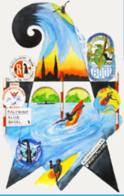
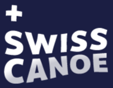
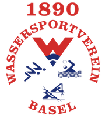
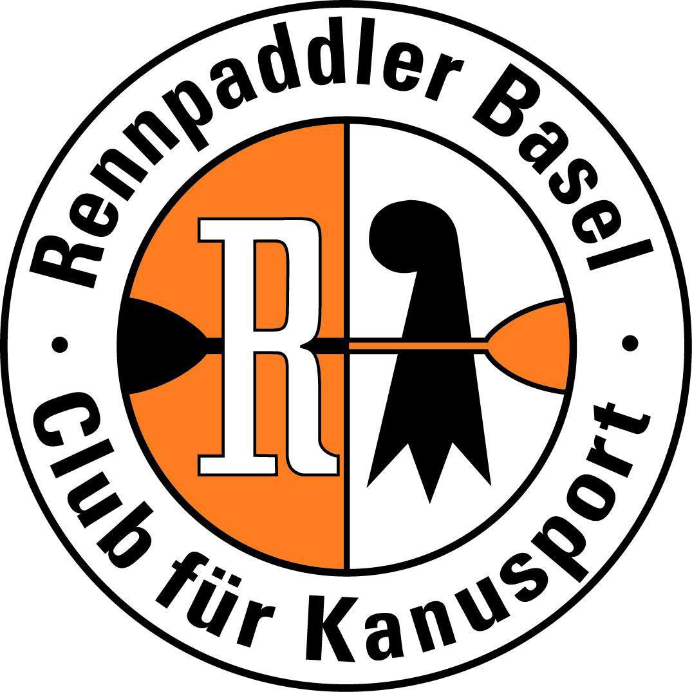
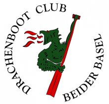
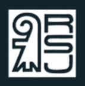

Über uns
2020 wurden wir, die Gründungsmitglieder der IG Wakareba, darauf aufmerksam, dass im Bereich der Reding- und Joggelibrücke Bauarbeiten zur Verbesserung der Fischgängigkeit geplant sind. Diese Massnahmen könnten die bekannten Surfwellen beeinträchtigen. Wir baten deshalb das Tiefbauamt Basel-Landschaft um Einsicht in die Pläne. Die erhaltenen Pläne haben wir mit technischer Hilfe des Schweizerischen Kanu-Verbandes analysiert und die möglichen Folgen für Paddler eingeschätzt. Anlässlich einer Begehung konnten wir dem zuständigen Projektleiter vom Tiefbauamt die Interessen und Bedenken der Paddler erläutern.
Um zukünftig die Interessen der Kajaker*innen bei Wasserbauprojekten in der Region Basel besser vertreten zu können, haben wir anschliessend die IG Wakareba gegründet.
Seit 2024 ist die IG Wakareba als eigenständige Arbeitsgruppe befugt, die Interessen der Basler Paddelsport IG im Zusammenhang mit Wasserbauprojekten in der Region zu wahren und zu vertreten.

Eine Arbeitsgruppe der Basler Paddelsport IG
Unterstützt durch ...

Swiss Canoe
Die Dachorganisation der Schweizer Kanu-Clubs

WSV Basel
Wassersportverein Basel (Kanu Section)
Basilisk Paddler

Rennpaddler
Globepaddler
Rheinraft

DBCBB
Drachenboot Club beider Basel
In Zusammenarbeit mit ...

Rhenania St. Johann Basel
der Kanusektion der Rhenania St. Johann Basel